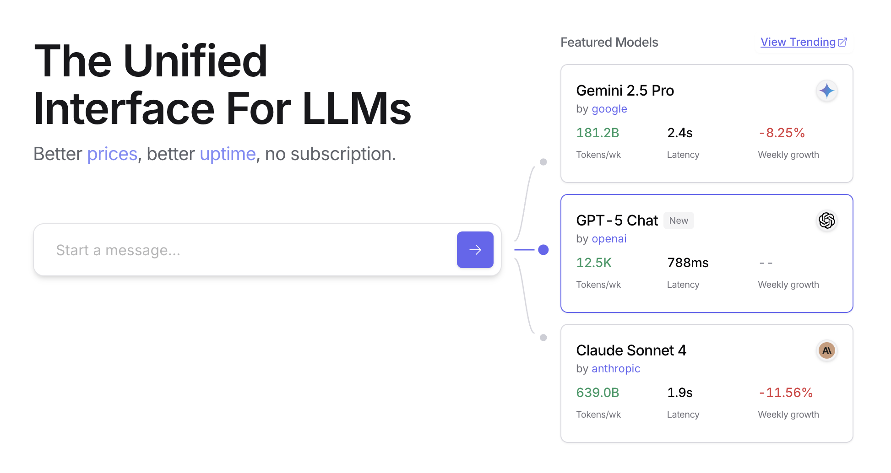
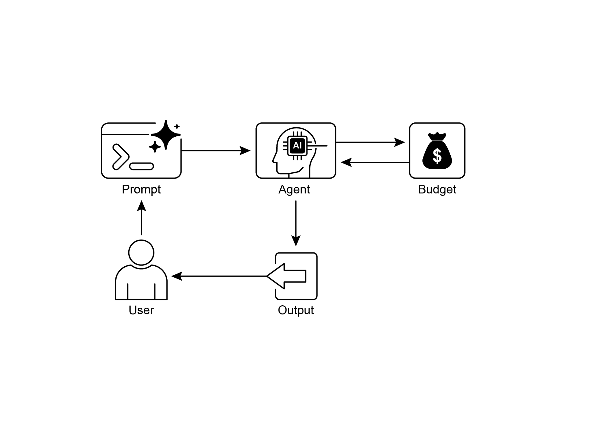

读书 · Agentic Design Patterns · 中英对照
第 16 章 · 资源感知优化 Resource-Aware Optimization
Chapter 16: Resource-Aware · 《Agentic Design Patterns》 · Antonio Gulli · 2025
讲智能体如何在预算、延迟与算力约束下动态分配模型与工具资源。
← 返回导读 原书 PDF · 第244页起 上一章:第15章 下一章:第17章
本章要点
① 按任务复杂度在昂贵强模型与廉价快模型间动态切换 ① Router Agent 分类请求，Critique Agent 反馈优化路由 ① 回退机制在模型不可用时降级以保服务连续 ① 扩展手段含上下文剪枝、自适应工具选择与能耗优化
本章一图流
请求分类Router Agent 判断任务复杂度→动态路由按复杂度选强模型或快模型→反馈优化Critique Agent 回传修正路由→降级回退模型不可用时保服务连续→资源扩展剪枝上下文、选工具、省能耗
在预算、延迟与算力约束下，动态分配模型与工具资源，兼顾成本与服务连续。
原书插图


本章划线句
划线句(逐字校验)
"Resource-Aware Optimization enables intelligent agents to dynamically monitor and manage computational, temporal, and financial resources during operation."
为什么值得划线:本章核心定义，点明三类资源与动态管理。
划线句(逐字校验)
"A key strategy in this category is the fallback mechanism, which acts as a safeguard when a preferred model is unavailable due to being overloaded or throttled."
为什么值得划线:回退机制是资源感知的关键保障。
划线句(逐字校验)
"This dynamic, multi-agent approach ensures the system operates efficiently, balancing response quality with cost-effectiveness."
为什么值得划线:概括路由加评审的整体权衡思想。
正文(英中对照)
"Chapter 16: Resource-Aware Optimization Resource-Aware Optimization enables intelligent agents to dynamically monitor and manage computational, temporal, and financial resources during operation. This differs from simple planning, which primarily focuses on action sequencing. Resource-Aware Optimization requires agents to make decisions regarding action execution to achieve goals within specified resource budgets or to optimize efficiency. This involves choosing between more accurate but expensive models and faster, lower-cost ones, or deciding whether to allocate additional compute for a more refined response versus returning a quicker, less detailed answer."
第16章：资源感知优化（Resource-Aware Optimization）使智能体能够在运行过程中动态监控和管理计算、时间与财务资源。这与简单规划不同，后者主要关注动作排序。资源感知优化要求智能体就动作执行做出决策，以在指定资源预算内实现目标或优化效率。这涉及在更准确但昂贵的模型与更快、成本更低的模型之间进行选择，或决定是为更精细的响应分配额外算力，还是返回更快、细节更少的答案。
导读注:核心在于智能体需在资源预算内权衡模型精度与成本，而非仅做动作排序。
"For example, consider an agent tasked with analyzing a large dataset for a financial analyst. If the analyst needs a preliminary report immediately, the agent might use a faster, more affordable model to quickly summarize key trends. However, if the analyst requires a highly accurate forecast for a critical investment decision and has a larger budget and more time, the agent would allocate more resources to utilize a powerful, slower, but more precise predictive model. A key strategy in this category is the fallback mechanism, which acts as a safeguard when a preferred model is unavailable due to being overloaded or throttled."
例如，考虑一个被指派为金融分析师分析大型数据集的 agent（智能体）。如果分析师需要立即获得一份初步报告，agent 可能会使用一个更快、更经济的模型来快速总结关键趋势。然而，如果分析师需要为一项关键投资决策提供高度准确的预测，并且拥有更大的预算和更多时间，agent 就会分配更多资源来使用一个强大、较慢但更精确的预测模型。这一类别中的一个关键策略是 fallback（回退）机制，当首选模型因过载或被限流而不可用时，它起到保障作用。
导读注:以金融分析场景说明按需分配模型资源，并点出 fallback 机制作为保障。
"To ensure graceful degradation, the system automatically switches to a default or more affordable model, maintaining service continuity instead of failing completely."
为确保优雅降级，系统会自动切换到默认或更经济的模型，保持服务连续性，而不是完全失败。
导读注:优雅降级的关键在于自动切换模型以维持服务。
"Practical Applications & Use Cases Practical use cases include: ● Cost-Optimized LLM Usage: An agent deciding whether to use a large, expensive LLM for complex tasks or a smaller, more affordable one for simpler queries, based on a budget constraint. ● Latency-Sensitive Operations: In real-time systems, an agent chooses a faster but potentially less comprehensive reasoning path to ensure a timely response. ● Energy Efficiency: For agents deployed on edge devices or with limited power, optimizing their processing to conserve battery life. ● Fallback for service reliability: An agent automatically switches to a backup model when the primary choice is unavailable, ensuring service continuity and graceful degradation. 1 ● Data Usage Management: An agent opting for summarized data retrieval instead of full dataset downloads to save bandwidth or storage. ● Adaptive Task Allocation: In multi-agent systems, agents self-assign tasks based on their current computational load or available time."
实际应用与用例 实际用例包括：● 成本优化的 LLM 使用：智能体根据预算约束，决定对复杂任务使用大型、昂贵的 LLM，还是对较简单的查询使用更小、更经济的模型。● 延迟敏感型操作：在实时系统中，智能体选择更快但可能不够全面的推理路径，以确保及时响应。● 能效：对于部署在边缘设备上或电力有限的智能体，优化其处理以节省电池寿命。● 服务可靠性的回退：当首选模型不可用时，智能体自动切换到备用模型，确保服务连续性并实现优雅降级。1 ● 数据使用管理：智能体选择摘要数据检索而非完整数据集下载，以节省带宽或存储。● 自适应任务分配：在多智能体系统中，智能体根据当前计算负载或可用时间自行分配任务。
导读注:展示智能体在成本、延迟、能效与可靠性间的动态权衡策略。
"Hands-On Code Example An intelligent system for answering user questions can assess the difficulty of each question. For simple queries, it utilizes a cost-effective language model such as Gemini Flash. For complex inquiries, a more powerful, but expensive, language model (like Gemini Pro) is considered. The decision to use the more powerful model also depends on resource availability, specifically budget and time constraints. This system dynamically selects appropriate models. For example, consider a travel planner built with a hierarchical agent."
动手代码示例 一个用于回答用户问题的智能系统可以评估每个问题的难度。对于简单查询，它使用成本效益高的语言模型，如 Gemini Flash。对于复杂查询，则考虑使用更强大但昂贵的语言模型（如 Gemini Pro）。使用更强大模型的决策还取决于资源可用性，特别是预算和时间约束。该系统动态选择合适的模型。例如，考虑一个用分层 agent 构建的旅行规划器。
导读注:展示按问题难度动态选模型，兼顾成本与资源约束。
"The high-level planning, which involves understanding a user's complex request, breaking it down into a multi-step itinerary, and making logical decisions, would be managed by a sophisticated and more powerful LLM like Gemini Pro. This is the "planner" agent that requires a deep understanding of context and the ability to reason. However, once the plan is established, the individual tasks within that plan, such as looking up flight prices, checking hotel availability, or finding restaurant reviews, are essentially simple, repetitive web queries. These "tool function calls" can be executed by a faster and more affordable model like Gemini Flash."
高层规划涉及理解用户的复杂请求、将其分解为多步行程并做出逻辑决策，这一过程将由像 Gemini Pro 这样复杂且更强大的 LLM 来管理。这是需要深入理解上下文和推理能力的"规划者"（planner）agent。然而，一旦计划确立，该计划中的各个任务——例如查询航班价格、检查酒店空房情况或查找餐厅评价——本质上都是简单、重复的网页查询。这些"工具函数调用"（tool function calls）可以由像 Gemini Flash 这样更快、更经济的模型来执行。
导读注:规划与执行分离：强模型做规划，快模型跑重复查询，兼顾质量与成本。
"It is easier to visualize why the affordable model can be used for these straightforward web searches, while the intricate planning phase requires the greater intelligence of the more advanced model to ensure a coherent and logical travel plan. Google's ADK supports this approach through its multi-agent architecture, which allows for modular and scalable applications. Different agents can handle specialized tasks. Model flexibility enables the direct use of various Gemini models, including both Gemini Pro and Gemini Flash, or integration of other models through LiteLLM. The ADK's orchestration capabilities support dynamic, LLM-driven routing for adaptive behavior."
更容易理解为什么经济型模型可用于这些直接的网络搜索，而复杂的规划阶段则需要更高级模型的更强智能，以确保旅行计划连贯且合乎逻辑。Google 的 ADK（Agent Development Kit，智能体开发套件）通过其多智能体架构支持这种方法，该架构允许模块化和可扩展的应用。不同的智能体可以处理专门的任务。模型灵活性使得可以直接使用各种 Gemini 模型，包括 Gemini Pro 和 Gemini Flash，或通过 LiteLLM 集成其他模型。ADK 的编排能力支持动态的、由 LLM 驱动的路由，以实现自适应行为。
导读注:按任务复杂度分配模型：简单搜索用经济型，复杂规划用高级模型。
"Built-in evaluation features allow systematic assessment of agent performance, which can be used for system refinement (see the Chapter on Evaluation and Monitoring)."
内置评估功能允许对 agent 性能进行系统化评估，这可用于系统改进（参见《评估与监控》章节）。
导读注:强调内置评估支撑系统化性能评估与改进。
"Next, two agents with identical setup but utilizing different models and costs will be defined. 2 # Conceptual Python-like structure, not runnable code from google.adk.agents import Agent # from google.adk.models.lite_llm import LiteLlm # If using models not directly supported by ADK's default Agent # Agent using the more expensive Gemini Pro 2.5 gemini_pro_agent = Agent( name="GeminiProAgent", model="gemini-2.5-pro", # Placeholder for actual model name if different description="A highly capable agent for complex queries.", instruction="You are an expert assistant for complex problem-solving." ) # Agent using the less expensive Gemini Flash 2.5 gemini_flash_agent = Agent( name="GeminiFlashAgent", model="gemini-2.5-flash", # Placeholder for actual model name if different description="A fast and efficient agent for simple queries.", instruction="You are a quick assistant for straightforward questions." ) A Router Agent can direct queries based on simple metrics like query length, where shorter queries go to less expensive models and longer queries to more capable models."
接下来，将定义两个设置相同但使用不同模型和成本的 agent（智能体）。2 # 概念性的类 Python 结构，并非可运行代码 from google.adk.agents import Agent # from google.adk.models.lite_llm import LiteLlm # 若使用 ADK 默认 Agent 不直接支持的模型 # 使用更昂贵的 Gemini Pro 2.5 的 agent gemini_pro_agent = Agent( name="GeminiProAgent", model="gemini-2.5-pro", # 若实际模型名不同，此为占位符 description="A highly capable agent for complex queries.", instruction="You are an expert assistant for complex problem-solving." ) # 使用更便宜的 Gemini Flash 2.5 的 agent gemini_flash_agent = Agent( name="GeminiFlashAgent", model="gemini-2.5-flash", # 若实际模型名不同，此为占位符 description="A fast and efficient agent for simple queries.", instruction="You are a quick assistant for straightforward questions." ) Router Agent（路由智能体）可以基于查询长度等简单指标来引导查询，较短的查询交给成本更低的模型，较长的查询交给能力更强的模型。
导读注:展示用 Router Agent 按查询长度在贵/便宜模型间分流，实现成本与能力权衡。
"However, a more sophisticated Router Agent can utilize either LLM or ML models to analyze query nuances and complexity. This LLM router can determine which downstream language model is most suitable. For example, a query requesting a factual recall is routed to a flash model, while a complex query requiring deep analysis is routed to a pro model. Optimization techniques can further enhance the LLM router's effectiveness. Prompt tuning involves crafting prompts to guide the router LLM for better routing decisions. Fine-tuning the LLM router on a dataset of queries and their optimal model choices improves its accuracy and efficiency."
然而，更复杂的路由代理（Router Agent）可以利用 LLM 或机器学习（ML）模型来分析查询的细微差别和复杂性。这个 LLM 路由器可以确定哪个下游语言模型最合适。例如，请求事实回忆的查询被路由到 flash 模型，而需要深度分析的复杂查询被路由到 pro 模型。优化技术可以进一步增强 LLM 路由器的有效性。prompt 调优（Prompt tuning）涉及精心设计 prompt 以引导路由器 LLM 做出更好的路由决策。在查询及其最优模型选择的数据集上对 LLM 路由器进行微调（Fine-tuning）可提高其准确性和效率。
导读注:LLM 路由器按查询复杂度分流至 flash 或 pro 模型，prompt 调优与微调可进一步提升效果。
"This dynamic routing capability balances response quality with cost-effectiveness. 3 # Conceptual Python-like structure, not runnable code"
这种动态路由能力在响应质量与成本效益之间取得平衡。3 # 概念性的类 Python 结构，非可运行代码
导读注:动态路由兼顾质量与成本，示例仅为伪代码。
python
from google.adk.agents import Agent, BaseAgent
from google.adk.events import Event
from google.adk.agents.invocation_context import InvocationContext
import asyncio"class QueryRouterAgent(BaseAgent): name: str = "QueryRouter" description: str = "Routes user queries to the appropriate LLM agent based on complexity." async def _run_async_impl(self, context: InvocationContext) -> AsyncGenerator[Event, None]: user_query = context.current_message.text # Assuming text input query_length = len(user_query.split()) # Simple metric: number of words"
class QueryRouterAgent(BaseAgent): name: str = "QueryRouter" description: str = "根据复杂度将用户查询路由到合适的 LLM agent。" async def _run_async_impl(self, context: InvocationContext) -> AsyncGenerator[Event, None]: user_query = context.current_message.text # 假设为文本输入 query_length = len(user_query.split()) # 简单指标：单词数量
导读注:展示查询路由 Agent的骨架：按词数这一简单指标决定路由。
python
if query_length < 20: # Example threshold for simplicity vs.
complexity
print(f"Routing to Gemini Flash Agent for short query
(length: {query_length})")
# In a real ADK setup, you would 'transfer_to_agent' or
directly invoke
# For demonstration, we'll simulate a call and yield its
response
response = await
gemini_flash_agent.run_async(context.current_message)
yield Event(author=self.name, content=f"Flash Agent
processed: {response}")
else:
print(f"Routing to Gemini Pro Agent for long query
(length: {query_length})")
response = await
gemini_pro_agent.run_async(context.current_message)
yield Event(author=self.name, content=f"Pro Agent
processed: {response}")"The Critique Agent evaluates responses from language models, providing feedback that serves several functions. For self-correction, it identifies errors or inconsistencies, prompting the answering agent to refine its output for improved 4 quality. It also systematically assesses responses for performance monitoring, tracking metrics like accuracy and relevance, which are used for optimization. Additionally, its feedback can signal reinforcement learning or fine-tuning; consistent identification of inadequate Flash model responses, for instance, can refine the router agent's logic."
Critique Agent（评审代理）评估语言模型的响应，提供具有多种功能的反馈。对于自我纠正，它识别错误或不一致之处，促使回答代理优化其输出以提高质量。它还系统地评估响应以进行性能监控，跟踪准确性和相关性等指标，这些指标用于优化。此外，其反馈可以指示强化学习或微调；例如，持续识别 Flash 模型响应不足可以优化 router agent（路由代理）的逻辑。
导读注:Critique Agent 的反馈兼具自我纠正、性能监控与强化学习信号三重作用。
"While not directly managing the budget, the Critique Agent contributes to indirect budget management by identifying suboptimal routing choices, such as directing simple queries to a Pro model or complex queries to a Flash model, which leads to poor results. This informs adjustments that improve resource allocation and cost savings. The Critique Agent can be configured to review either only the generated text from the answering agent or both the original query and the generated text, enabling a comprehensive evaluation of the response's alignment with the initial question. CRITIC_SYSTEM_PROMPT = """ You are the **Critic Agent**, serving as the quality assurance arm of our collaborative research assistant system."
虽然不直接管理预算，Critique Agent（评审代理）通过识别次优的路由选择来间接参与预算管理，例如将简单查询导向 Pro 模型或将复杂查询导向 Flash 模型，从而导致效果不佳。这为改进资源分配和节省成本的调整提供了依据。Critique Agent 可配置为仅审查回答代理生成的文本，或同时审查原始查询与生成的文本，从而能够全面评估回答与初始问题的一致性。CRITIC_SYSTEM_PROMPT = """ 你是 **Critic Agent**（评审代理），作为我们协作研究助手系统的质量保证部门。
导读注:揭示评审代理如何间接控预算：识别错误路由并支持双重审查。
"Your primary function is to **meticulously review and challenge** information from the Researcher Agent, guaranteeing **accuracy, completeness, and unbiased presentation**. Your duties encompass: * **Assessing research findings** for factual correctness, thoroughness, and potential leanings. * **Identifying any missing data** or inconsistencies in reasoning. * **Raising critical questions** that could refine or expand the current understanding. * **Offering constructive suggestions** for enhancement or exploring different angles. * **Validating that the final output is comprehensive** and balanced. All criticism must be constructive. Your goal is to fortify the research, not invalidate it."
你的主要职能是细致审查并质疑Researcher Agent 提供的信息，确保准确性、完整性和无偏呈现。你的职责包括：* 评估研究发现的事实正确性、彻底性及潜在倾向。* 识别任何缺失数据或推理中的不一致之处。* 提出关键问题，以完善或拓展当前理解。* 提供建设性建议以改进或探索不同角度。* 验证最终输出全面且平衡。所有批评都必须具有建设性。你的目标是强化研究，而非否定它。
导读注:明确审查者角色：质疑而非否定，以建设性批评强化研究质量。
"Structure your feedback clearly, drawing attention to specific points for revision. Your overarching aim is to ensure the final research product meets the highest possible quality standards. """ The Critic Agent operates based on a predefined system prompt that outlines its role, responsibilities, and feedback approach. A well-designed prompt for this agent must clearly establish its function as an evaluator. It should specify the areas for critical focus and emphasize providing constructive feedback rather than mere dismissal. The 5 prompt should also encourage the identification of both strengths and weaknesses, and it must guide the agent on how to structure and present its feedback."
清晰地组织你的反馈，将注意力引向需要修订的具体要点。你的总体目标是确保最终研究成果达到尽可能高的质量标准。""" Critic Agent（评审智能体）基于一个预定义的系统 prompt 运行，该 prompt 概述了其角色、职责和反馈方式。为这个智能体设计良好的 prompt 必须清楚地确立其作为评估者的职能。它应明确需要重点批判的领域，并强调提供建设性反馈而非仅仅否定。该 prompt 还应鼓励同时识别优点和缺点，并且必须指导智能体如何组织和呈现其反馈。
导读注:强调 Critic Agent 的 prompt 需明确评估者角色，并兼顾建设性反馈与优缺点识别。
"Hands-On Code with OpenAI This system uses a resource-aware optimization strategy to handle user queries efficiently. It first classifies each query into one of three categories to determine the most appropriate and cost-effective processing pathway. This approach avoids wasting computational resources on simple requests while ensuring complex queries get the necessary attention."
OpenAI 实战代码 该系统采用资源感知的优化策略来高效处理用户查询。它首先将每个查询分类为三个类别之一，以确定最合适且最具成本效益的处理路径。这种方法避免在简单请求上浪费计算资源，同时确保复杂查询获得必要的关注。
导读注:资源感知优化：先分类查询再选处理路径，兼顾成本与效果。
"The three categories are: ● simple: For straightforward questions that can be answered directly without complex reasoning or external data. ● reasoning: For queries that require logical deduction or multi-step thought processes, which are routed to more powerful models. ● internet_search: For questions needing current information, which automatically triggers a Google Search to provide an up-to-date answer."
这三类分别是：● simple（简单）：适用于可以直接回答、无需复杂推理或外部数据的直白问题。● reasoning（推理）：适用于需要逻辑推演或多步思考过程的查询，这类查询会被路由到更强大的模型。● internet_search（联网搜索）：适用于需要最新信息的问题，会自动触发 Google Search 以提供最新的答案。
导读注:三类查询路由策略：按需分流，推理与联网各走专用通道。
python
The code is under the MIT license and available on Github:
(https://github.com/mahtabsyed/21-Agentic-Patterns/blob/main/16_Resource_Aware_
Opt_LLM_Reflection_v2.ipynb)"# MIT License # Copyright (c) 2025 Mahtab Syed # https://www.linkedin.com/in/mahtabsyed/"
# MIT 许可证 # 版权所有 (c) 2025 Mahtab Syed # https://www.linkedin.com/in/mahtabsyed/
导读注:这是 MIT 许可证的版权声明头部，标注作者与年份。
python
import os
import requests
import json
from dotenv import load_dotenv
from openai import OpenAIpython
# Load environment variables
load_dotenv()
OPENAI_API_KEY = os.getenv("OPENAI_API_KEY")
GOOGLE_CUSTOM_SEARCH_API_KEY =
os.getenv("GOOGLE_CUSTOM_SEARCH_API_KEY")
GOOGLE_CSE_ID = os.getenv("GOOGLE_CSE_ID")"if not OPENAI_API_KEY or not GOOGLE_CUSTOM_SEARCH_API_KEY or not GOOGLE_CSE_ID: raise ValueError( 6 "Please set OPENAI_API_KEY, GOOGLE_CUSTOM_SEARCH_API_KEY, and GOOGLE_CSE_ID in your .env file." ) client = OpenAI(api_key=OPENAI_API_KEY)"
如果缺少 OPENAI_API_KEY、GOOGLE_CUSTOM_SEARCH_API_KEY 或 GOOGLE_CSE_ID，则抛出 ValueError：请在 .env 文件中设置 OPENAI_API_KEY、GOOGLE_CUSTOM_SEARCH_API_KEY 和 GOOGLE_CSE_ID。随后用 OpenAI(api_key=OPENAI_API_KEY) 初始化客户端。
导读注:启动即校验三个密钥，缺失则报错，确保后续调用不因配置缺失失败。
python
# --- Step 1: Classify the Prompt --def classify_prompt(prompt: str) -> dict:
system_message = {
"role": "system",
"content": (
"You are a classifier that analyzes user prompts and
returns one of three categories ONLY:\n\n"
"- simple\n"
"- reasoning\n"
"- internet_search\n\n"
"Rules:\n"
"- Use 'simple' for direct factual questions that need no
reasoning or current events.\n"
"- Use 'reasoning' for logic, math, or multi-step
inference questions.\n"
"- Use 'internet_search' if the prompt refers to current
events, recent data, or things not in your training data.\n\n"
"Respond ONLY with JSON like:\n"
'{ "classification": "simple" }'
),
}"user_message = {"role": "user", "content": prompt} response = client.chat.completions.create( model="gpt-4o", messages=[system_message, user_message], temperature=1 )"
user_message = {"role": "user", "content": prompt} response = client.chat.completions.create( model="gpt-4o", messages=[system_message, user_message], temperature=1 )
导读注:代码原样保留，展示如何构造消息并调用 chat completions 接口。
text
reply = response.choices[0].message.content
return json.loads(reply)python
# --- Step 2: Google Search --def google_search(query: str, num_results=1) -> list:
url = "https://www.googleapis.com/customsearch/v1"
params = {
"key": GOOGLE_CUSTOM_SEARCH_API_KEY,
"cx": GOOGLE_CSE_ID,
"q": query,
"num": num_results,
}python
try:
response = requests.get(url, params=params)
response.raise_for_status()
results = response.json()python
if "items" in results and results["items"]:
return [
{
"title": item.get("title"),
"snippet": item.get("snippet"),
"link": item.get("link"),
}
for item in results["items"]
]
else:
return []
except requests.exceptions.RequestException as e:
return {"error": str(e)}"# --- Step 3: Generate Response --def generate_response(prompt: str, classification: str, search_results=None) -> str: if classification == "simple": model = "gpt-4o-mini" full_prompt = prompt elif classification == "reasoning": model = "o4-mini" full_prompt = prompt elif classification == "internet_search": model = "gpt-4o" # Convert each search result dict to a readable string if search_results: search_context = "\n".join( [ f"Title: {item.get('title')}\nSnippet: {item.get('snippet')}\nLink: {item.get('link')}" for item in search_results ] ) else: search_context = "No search results found." full_prompt = f"""Use the following web results to answer the user query: {search_context} 8 Query: {prompt}""" response = client.chat.completions.create( model=model, messages=[{"role": "user", "content": full_prompt}], temperature=1, ) return response.choices[0].message.content, model"
# --- 步骤 3：生成响应 --
def generate_response(prompt: str, classification: str, search_results=None) -> str:
if classification == "simple":
model = "gpt-4o-mini"
full_prompt = prompt
elif classification == "reasoning":
model = "o4-mini"
full_prompt = prompt
elif classification == "internet_search":
model = "gpt-4o"
# 将每个搜索结果字典转换为可读字符串
if search_results:
search_context = "\n".join(
[
f"Title: {item.get('title')}\nSnippet: {item.get('snippet')}\nLink: {item.get('link')}"
for item in search_results
]
)
else:
search_context = "No search results found."
full_prompt = f"""Use the following web results to answer the user query: {search_context} 8 Query: {prompt}"""
response = client.chat.completions.create(
model=model,
messages=[{"role": "user", "content": full_prompt}],
temperature=1,
)
return response.choices[0].message.content, model
导读注:按分类路由模型：simple/reasoning 直传 prompt，internet_search 拼接搜索结果。
python
# --- Step 4: Combined Router -- def handle_prompt(prompt: str) -> dict:
classification_result = classify_prompt(prompt)
# Remove or comment out the next line to avoid duplicate printing
# print("\n🔍 Classification Result:", classification_result)
classification = classification_result["classification"]python
search_results = None
if classification == "internet_search":
search_results = google_search(prompt)
# print("\n🔍 Search Results:", search_results)"answer, model = generate_response(prompt, classification, search_results) return {"classification": classification, "response": answer, "model": model} test_prompt = "What is the capital of Australia?" # test_prompt = "Explain the impact of quantum computing on cryptography." # test_prompt = "When does the Australian Open 2026 start, give me full date?""
answer, model = generate_response(prompt, classification, search_results) 返回 {"classification": classification, "response": answer, "model": model} test_prompt = "What is the capital of Australia?" # test_prompt = "Explain the impact of quantum computing on cryptography." # test_prompt = "When does the Australian Open 2026 start, give me full date?"
导读注:展示代码调用与测试 prompt 示例，注意注释切换不同查询类型。
python
result = handle_prompt(test_prompt)
print("🔍 Classification:", result["classification"])
print("🧠 Model Used:", result["model"])
print("🧠 Response:\n", result["response"])"This Python code implements a prompt routing system to answer user questions. It begins by loading necessary API keys from a .env file for OpenAI and Google Custom Search. The core functionality lies in classifying the user's prompt into three categories: simple, reasoning, or internet search. A dedicated function utilizes an OpenAI model for this classification step. If the prompt requires current information, a Google search is performed using the Google Custom Search API. Another function 9 then generates the final response, selecting an appropriate OpenAI model based on the classification. For internet search queries, the search results are provided as context to the model."
这段 Python 代码实现了一个 prompt 路由系统来回答用户问题。它首先从 .env 文件加载 OpenAI 和 Google Custom Search 所需的 API 密钥。核心功能在于将用户的 prompt 分类为三类：简单、推理或互联网搜索。一个专用函数利用 OpenAI 模型完成这一分类步骤。如果 prompt 需要最新信息，则使用 Google Custom Search API 执行 Google 搜索。随后另一个函数 9 生成最终响应，根据分类结果选择合适的 OpenAI 模型。对于互联网搜索查询，搜索结果会作为上下文提供给模型。
导读注:展示如何用prompt 路由按问题类型动态选择模型与搜索，兼顾成本与时效。
"The main handle_prompt function orchestrates this workflow, calling the classification and search (if needed) functions before generating the response. It returns the classification, the model used, and the generated answer. This system efficiently directs different types of queries to optimized methods for a better response. Hands-On Code Example (OpenRouter) OpenRouter offers a unified interface to hundreds of AI models via a single API endpoint."
主要的 handle_prompt 函数负责编排这一工作流，在生成响应之前调用分类和搜索（如需要）函数。它返回分类结果、所使用的模型以及生成的答案。该系统高效地将不同类型的查询引导至优化后的方法，以获得更好的响应。动手代码示例（OpenRouter）OpenRouter 通过单一 API 端点提供访问数百个 AI 模型的统一接口。
导读注:展示 handle_prompt 如何编排分类、搜索与生成，并引出 OpenRouter 统一接口示例。
"It provides automated failover and cost-optimization, with easy integration through your preferred SDK or framework. import requests import json response = requests.post( url="https://openrouter.ai/api/v1/chat/completions", headers={ "Authorization": "Bearer <OPENROUTER_API_KEY>", "HTTP-Referer": "<YOUR_SITE_URL>", # Optional. Site URL for rankings on openrouter.ai. "X-Title": "<YOUR_SITE_NAME>", # Optional. Site title for rankings on openrouter.ai. }, data=json.dumps({ "model": "openai/gpt-4o", # Optional "messages": [ { "role": "user", "content": "What is the meaning of life?" } ] }) ) This code snippet uses the requests library to interact with the OpenRouter API."
它提供自动故障转移(failover)与成本优化,并可通过你偏好的 SDK 或框架轻松集成。import requests import json response = requests.post( url="https://openrouter.ai/api/v1/chat/completions", headers={ "Authorization": "Bearer <OPENROUTER_API_KEY>", "HTTP-Referer": "<YOUR_SITE_URL>", # Optional. Site URL for rankings on openrouter.ai. "X-Title": "<YOUR_SITE_NAME>", # Optional. Site title for rankings on openrouter.ai. }, data=json.dumps({ "model": "openai/gpt-4o", # Optional "messages": [ { "role": "user", "content": "What is the meaning of life?" } ] }) ) 此代码片段使用 requests 库与 OpenRouter API 交互。
导读注:展示用 requests 调用 OpenRouter 的最小示例,注意 自动故障转移与可选请求头。
"It sends a POST request to the chat completion endpoint with a user message. The request includes authorization headers with an API key and optional site information. The goal is to get a response from a specified language model, in this case, "openai/gpt-4o". 10 Openrouter offers two distinct methodologies for routing and determining the computational model used to process a given request. ● Automated Model Selection: This function routes a request to an optimized model chosen from a curated set of available models. The selection is predicated on the specific content of the user's prompt."
它向聊天补全端点发送一个带有用户消息的 POST 请求。该请求包含带有 API 密钥和可选站点信息的授权头。目标是获得指定语言模型（此处为 "openai/gpt-4o"）的响应。10 Openrouter 提供两种不同的方法，用于路由并确定处理给定请求所使用的计算模型。● 自动模型选择：此功能将请求路由到从精选的可用模型集合中选出的优化模型。该选择基于用户 prompt 的具体内容。
导读注:介绍 Openrouter 的请求方式与自动模型选择机制。
"The identifier of the model that ultimately processes the request is returned in the response's metadata. { "model": "openrouter/auto", ... // Other params } ● Sequential Model Fallback: This mechanism provides operational redundancy by allowing users to specify a hierarchical list of models. The system will first attempt to process the request with the primary model designated in the sequence. Should this primary model fail to respond due to any number of error conditions—such as service unavailability, rate-limiting, or content filtering—the system will automatically re-route the request to the next specified model in the sequence. This process continues until a model in the list successfully executes the request or the list is exhausted."
最终处理该请求的模型标识符会在响应的 metadata 中返回。{ "model": "openrouter/auto", ... // 其他参数 } ● 顺序模型回退（Sequential Model Fallback）：该机制通过允许用户指定一个分层模型列表来提供运行冗余。系统会首先尝试用序列中指定的主模型处理请求。如果该主模型因任何错误条件（例如服务不可用、限流或内容过滤）而无法响应，系统会自动将请求重新路由到序列中的下一个指定模型。此过程会持续进行，直到列表中的某个模型成功执行该请求，或列表耗尽为止。
导读注:顺序模型回退通过逐级切换模型实现容错，是提升可用性的关键机制。
"The final cost of the operation and the model identifier returned in the response will correspond to the model that successfully completed the computation. { "models": ["anthropic/claude-3.5-sonnet", "gryphe/mythomax-l2-13b"], ... // Other params }"
操作的最终成本和响应中返回的模型标识符将对应于成功完成计算的模型。{ "models": ["anthropic/claude-3.5-sonnet", "gryphe/mythomax-l2-13b"], ... // 其他参数 }
导读注:计费与模型标识以实际完成计算的模型为准，多模型回退时需注意。
text
OpenRouter offers a detailed leaderboard ( https://openrouter.ai/rankings) which ranks
available AI models based on their cumulative token production. It also offers latest
models from different providers (ChatGPT, Gemini, Claude) (see Fig. 1)"11 Fig. 1: OpenRouter Web site (https://openrouter.ai/) Beyond Dynamic Model Switching: A Spectrum of Agent Resource Optimizations Resource-aware optimization is paramount in developing intelligent agent systems that operate efficiently and effectively within real-world constraints. Let's see a number of additional techniques: Dynamic Model Switching is a critical technique involving the strategic selection of large language models based on the intricacies of the task at hand and the available computational resources. When faced with simple queries, a lightweight, cost-effective LLM can be deployed, whereas complex, multifaceted problems necessitate the utilization of more sophisticated and resource-intensive models."
11 图 1：OpenRouter 网站（https://openrouter.ai/） 超越动态模型切换：智能体资源优化的谱系 资源感知优化对于开发能在现实约束下高效、有效运行的智能体系统至关重要。让我们看看若干其他技术：动态模型切换是一项关键技术，涉及根据手头任务的复杂程度和可用计算资源，战略性地选择大语言模型（LLM）。面对简单查询时，可以部署轻量、成本效益高的 LLM；而复杂、多层面的问题则需要使用更复杂、资源消耗更大的模型。
导读注:提出资源感知优化谱系，动态模型切换只是其中一环。
"Adaptive Tool Use & Selection ensures agents can intelligently choose from a suite of tools, selecting the most appropriate and efficient one for each specific sub-task, with careful consideration given to factors like API usage costs, latency, and execution time. This dynamic tool selection enhances overall system efficiency by optimizing the use of external APIs and services. Contextual Pruning & Summarization plays a vital role in managing the amount of information processed by agents, strategically minimizing the prompt token count and reducing inference costs by intelligently summarizing and selectively retaining only the 12 most relevant information from the interaction history, preventing unnecessary computational overhead."
自适应工具使用与选择（Adaptive Tool Use & Selection）确保智能体能够从一套工具中智能地选择，为每个特定子任务挑选最合适、最高效的工具，并仔细考虑 API 使用成本、延迟和执行时间等因素。这种动态工具选择通过优化外部 API 和服务的使用，提升了整体系统效率。上下文剪枝与摘要（Contextual Pruning & Summarization）在管理智能体处理的信息量方面起着至关重要的作用，通过智能摘要并选择性地仅保留交互历史中 12 条最相关的信息，策略性地最小化 prompt token 数量并降低推理成本，从而防止不必要的计算开销。
导读注:两大机制：动态选工具控成本，剪枝摘要压 token 降推理开销。
"Proactive Resource Prediction involves anticipating resource demands by forecasting future workloads and system requirements, which allows for proactive allocation and management of resources, ensuring system responsiveness and preventing bottlenecks. Cost-Sensitive Exploration in multi-agent systems extends optimization considerations to encompass communication costs alongside traditional computational costs, influencing the strategies employed by agents to collaborate and share information, aiming to minimize the overall resource expenditure."
主动资源预测（Proactive Resource Prediction）通过预测未来工作负载和系统需求来预判资源需求，从而能够主动分配和管理资源，确保系统响应性并防止瓶颈。多智能体系统中的成本敏感探索（Cost-Sensitive Exploration）将优化考量扩展到涵盖通信成本以及传统计算成本，影响智能体协作和共享信息时所采用的策略，旨在最小化总体资源开销。
导读注:两段分别点出主动预测资源与通信成本纳入优化，是资源管理的关键转向。
"Energy-Efficient Deployment is specifically tailored for environments with stringent resource constraints, aiming to minimize the energy footprint of intelligent agent systems, extending operational time and reducing overall running costs. Parallelization & Distributed Computing Awareness leverages distributed resources to enhance the processing power and throughput of agents, distributing computational workloads across multiple machines or processors to achieve greater efficiency and faster task completion."
节能部署（Energy-Efficient Deployment）专为资源受限严格的环境量身定制，旨在最小化智能体系统的能源足迹，延长运行时间并降低整体运行成本。并行化与分布式计算感知（Parallelization & Distributed Computing Awareness）利用分布式资源来增强智能体的处理能力和吞吐量，将计算工作负载分布到多台机器或处理器上，以实现更高的效率和更快的任务完成。
导读注:两类部署策略：节能降本延时，并行分布式提效增速。
"Learned Resource Allocation Policies introduce a learning mechanism, enabling agents to adapt and optimize their resource allocation strategies over time based on feedback and performance metrics, improving efficiency through continuous refinement. Graceful Degradation and Fallback Mechanisms ensure that intelligent agent systems can continue to function, albeit perhaps at a reduced capacity, even when resource constraints are severe, gracefully degrading performance and falling back to alternative strategies to maintain operation and provide essential functionality. At a Glance What: Resource-Aware Optimization addresses the challenge of managing the consumption of computational, temporal, and financial resources in intelligent systems."
学习型资源分配策略（Learned Resource Allocation Policies）引入了一种学习机制，使智能体能够基于反馈和性能指标随时间调整并优化其资源分配策略，通过持续改进来提升效率。优雅降级与回退机制（Graceful Degradation and Fallback Mechanisms）确保智能体系统即使在资源严重受限时也能继续运行，尽管可能以降低的容量运行，通过优雅地降低性能并回退到替代策略来维持运行并提供基本功能。概览 是什么：资源感知优化（Resource-Aware Optimization）解决的是智能系统中管理计算、时间和财务资源消耗的挑战。
导读注:优雅降级与回退机制是资源受限下保障系统持续运行的关键设计。
"LLM-based applications can be expensive and slow, and selecting the best model or tool for every task is often inefficient. This creates a fundamental trade-off between the quality of a system's output and the resources required to produce it. 13 Without a dynamic management strategy, systems cannot adapt to varying task complexities or operate within budgetary and performance constraints. Why: The standardized solution is to build an agentic system that intelligently monitors and allocates resources based on the task at hand. This pattern typically employs a "Router Agent" to first classify the complexity of an incoming request."
基于 LLM 的应用可能成本高昂且速度缓慢，而为每项任务选择最佳模型或工具往往效率低下。这就在系统输出质量与产出所需资源之间形成了根本性的权衡。13 如果没有动态管理策略，系统就无法适应不断变化的任务复杂度，也无法在预算和性能约束内运行。原因：标准化的解决方案是构建一个智能体系统（agentic system），根据当前任务智能地监控和分配资源。该模式通常采用一个"路由智能体"（Router Agent），先对传入请求的复杂度进行分类。
导读注:点出 LLM 应用的质量与资源权衡，并引出用 Router Agent 做动态资源分配的标准解法。
"The request is then forwarded to the most suitable LLM or tool—a fast, inexpensive model for simple queries, and a more powerful one for complex reasoning. A "Critique Agent" can further refine the process by evaluating the quality of the response, providing feedback to improve the routing logic over time. This dynamic, multi-agent approach ensures the system operates efficiently, balancing response quality with cost-effectiveness."
随后，请求被转发给最合适的 LLM 或工具——简单查询使用快速、廉价的模型，复杂推理则使用更强大的模型。一个“Critique Agent”（评审代理）可以通过评估响应的质量来进一步优化这一过程，提供反馈以随时间改进路由逻辑。这种动态的、多代理的方法确保系统高效运行，在响应质量与成本效益之间取得平衡。
导读注:多代理动态路由按任务复杂度分配模型，Critique Agent 反馈闭环持续优化成本与质量。
"Rule of thumb: Use this pattern when operating under strict financial budgets for API calls or computational power, building latency-sensitive applications where quick response times are critical, deploying agents on resource-constrained hardware such as edge devices with limited battery life, programmatically balancing the trade-off between response quality and operational cost, and managing complex, multi-step workflows where different tasks have varying resource requirements. Visual Summary 14 Fig. 2: Resource-Aware Optimization Design Pattern Key Takeaways ● Resource-Aware Optimization is Essential: Intelligent agents can manage computational, temporal, and financial resources dynamically."
经验法则：在以下情况下使用此模式：在 API 调用或计算能力面临严格财务预算时运行、构建对延迟敏感且快速响应至关重要的应用、在资源受限的硬件（如电池寿命有限的边缘设备）上部署 agent、以编程方式平衡响应质量与运营成本之间的权衡，以及管理不同任务具有不同资源需求的复杂多步骤工作流。可视化总结 14 图 2：资源感知优化设计模式 关键要点 ● 资源感知优化至关重要：智能体（intelligent agents）可以动态管理计算、时间和财务资源。
导读注:给出资源感知优化模式的适用场景清单，预算、延迟与边缘设备是核心触发条件。
"Decisions regarding model usage and execution paths are made based on real-time constraints and objectives. ● Multi-Agent Architecture for Scalability: Google's ADK provides a multi-agent framework, enabling modular design. Different agents (answering, routing, critique) handle specific tasks. ● Dynamic, LLM-Driven Routing: A Router Agent directs queries to language models (Gemini Flash for simple, Gemini Pro for complex) based on query complexity and budget."
关于模型使用和执行路径的决策是基于实时约束和目标做出的。● 面向可扩展性的多智能体（Multi-Agent）架构：Google 的 ADK 提供了多智能体框架，支持模块化设计。不同的智能体（回答、路由、评审）处理特定任务。● 动态的、由 LLM 驱动的路由：路由器智能体（Router Agent）根据查询复杂度和预算，将查询导向不同的语言模型（简单查询用 Gemini Flash，复杂查询用 Gemini Pro）。
导读注:动态路由按复杂度与预算分配模型，兼顾成本与效果。
"This optimizes cost and performance. ● Critique Agent Functionality: A dedicated Critique Agent provides feedback for self-correction, performance monitoring, and refining routing logic, enhancing system effectiveness. 15 ● Optimization Through Feedback and Flexibility: Evaluation capabilities for critique and model integration flexibility contribute to adaptive and self-improving system behavior. ● Additional Resource-Aware Optimizations: Other methods include Adaptive Tool Use & Selection, Contextual Pruning & Summarization, Proactive Resource Prediction, Cost-Sensitive Exploration in Multi-Agent Systems, Energy-Efficient Deployment, Parallelization & Distributed Computing Awareness, Learned Resource Allocation Policies, Graceful Degradation and Fallback Mechanisms, and Prioritization of Critical Tasks."
这优化了成本与性能。Critique Agent（评审智能体）功能：一个专门的 Critique Agent 提供反馈，用于自我纠正、性能监控和优化路由逻辑，从而提升系统效能。15 通过反馈与灵活性实现优化：用于评审的评估能力以及模型集成的灵活性，有助于形成自适应且自我改进的系统行为。其他资源感知优化：其他方法包括自适应工具使用与选择（Adaptive Tool Use & Selection）、上下文剪枝与摘要（Contextual Pruning & Summarization）、主动资源预测（Proactive Resource Prediction）、多智能体系统中的成本敏感探索（Cost-Sensitive Exploration in Multi-Agent Systems）、能效部署（Energy-Efficient Deployment）、并行化与分布式计算感知（Parallelization & Distributed Computing Awareness）、学习型资源分配策略（Learned Resource Allocation Policies）、优雅降级与回退机制（Graceful Degradation and Fallback Mechanisms），以及关键任务优先级排序（Prioritization of Critical Tasks）。
导读注:Critique Agent 是自我纠正与路由优化的核心，其余为资源感知优化清单。
"Conclusions Resource-aware optimization is essential for the development of intelligent agents, enabling efficient operation within real-world constraints. By managing computational, temporal, and financial resources, agents can achieve optimal performance and cost-effectiveness. Techniques such as dynamic model switching, adaptive tool use, and contextual pruning are crucial for attaining these efficiencies. Advanced strategies, including learned resource allocation policies and graceful degradation, enhance an agent's adaptability and resilience under varying conditions. Integrating these optimization principles into agent design is fundamental for building scalable, robust, and sustainable AI systems. References 1."
结论 资源感知优化（resource-aware optimization）对于智能体（intelligent agents）的开发至关重要，使其能够在现实世界约束下高效运行。通过管理计算、时间和财务资源，智能体可以实现最佳性能与成本效益。动态模型切换、自适应工具使用和上下文剪枝等技术对于实现这些效率至关重要。包括学习型资源分配策略和优雅降级在内的先进策略，增强了智能体在不同条件下的适应性和韧性。将这些优化原则整合到智能体设计中，是构建可扩展、稳健且可持续的 AI 系统的基础。参考文献 1.
导读注:结论段强调资源感知优化是构建可扩展、稳健 AI 系统的基础。
"Google's Agent Development Kit (ADK): https://google.github.io/adk-docs/ 2. Gemini Flash 2.5 & Gemini 2.5 Pro: https://aistudio.google.com/ 3. OpenRouter: https://openrouter.ai/docs/quickstart 16 1"
Google 的 Agent Development Kit (ADK，智能体开发工具包)：https://google.github.io/adk-docs/ 2. Gemini Flash 2.5 与 Gemini 2.5 Pro：https://aistudio.google.com/ 3. OpenRouter：https://openrouter.ai/docs/quickstart 16 1
导读注:列出 ADK、Gemini 2.5 与 OpenRouter 三个关键资源链接。
来源与用途
《Agentic Design Patterns》,Antonio Gulli · 2025 · 原书 PDF。本页为学习用途的对照整理,版权归原作者;有问题到读书导师处提问,答案只引用书中原文并标注章节。
← 第15章 · 智能体间通信 Inter-Agent Communication (A2A) 导读 第17章 · 推理技术 Reasoning Techniques →